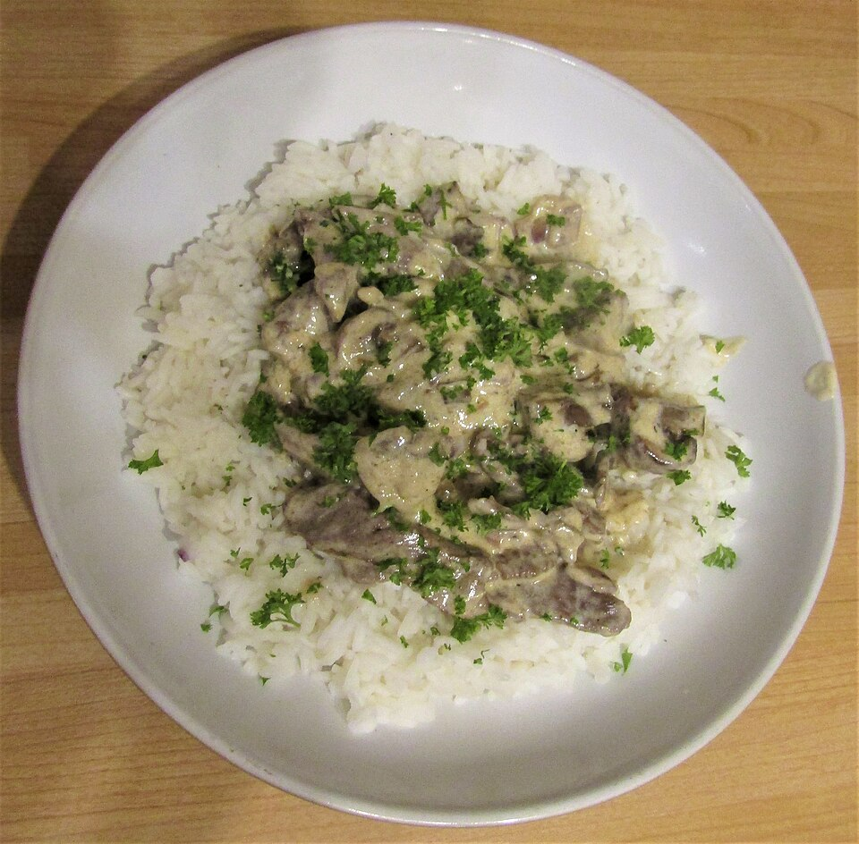

Carnes · Bovinos
Stroganoff

Ingredientes
- 1 kg de filé mignon magro, sem gordura
- 1 colher (sopa) de mostarda em pó
- 1 colher (sopa) de açúcar
- 2 colheres (chá) de sal
- 4 a 5 colheres (sopa) de óleo
- 4 xícaras de cebolas cortadas em rodelas finas
- 1/2 kg de cogumelos frescos fatiados no sentido do comprimento
- 1 colher (chá) de pimenta-do-reino moída na hora
- 2 1/3 xícaras de creme de leite fresco azedo (sour cream)
Modo de preparo
- Corte a carne em fatias de 0,5 cm no sentido das fibras e depois em tiras de 2 cm no sentido contrário. Reserve.
- Misture a mostarda, 1 1/2 colher (chá) de açúcar, uma pitada de sal e água quente o bastante para formar um creme grosso. Deixe descansar pelo menos 10 minutos.
- Aqueça 2 colheres de óleo numa panela grande em fogo alto até quase fumegar.
- Junte cebolas e cogumelos, tampe, baixe o fogo e cozinhe 20 a 30 minutos até amolecerem, mexendo de vez em quando. Escorra, devolva à panela e reserve.
- Noutra panela, aqueça 2 colheres de óleo e doure metade da carne por cerca de 2 minutos.
- Passe a carne para a panela dos legumes.
- Doure o restante da carne da mesma forma. Junte tudo numa panela, acrescente o restante do sal, a pimenta e o creme de mostarda. Deixe esfriar e congele (sem o creme azedo).
Observação
O creme azedo tende a talhar ao descongelar: junte só no reaquecimento. Congelamento: recipiente rígido forrado com plástico, depois saco plástico. Descongelamento: aqueça em banho-maria; junte o creme azedo e 1/2 colher (chá) de açúcar, sem ferver. Sirva com batata-palha.